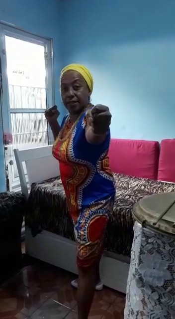

Em 16/03/2020, entramos em isolamento social por causa da pandemia de COVID – 19. Nessas condições, nos deparamos com uma realidade nunca vivida em nossa história recente. Isso tudo nos levou a buscar outras maneiras de interação, de convivência e de trabalho, que nos cobraram uma reorganização completa de nossas vidas. A necessidade de manter em curso o projeto de pesquisa também precisou se adequar a um novo modo de fazer.
Pensando em maneiras de continuar as pesquisas, acordei numa manhã com a cabeça efervescendo de ideias, e logo tratei de colocar em prática. Imaginei três grupos de pessoas próximas com as quais realizaria, a partir de trabalho remoto, uma prática de DançAdinkra (isto é, de criação coreográfica coletiva motivada pela construção Adinkra identitário). O primeiro grupo seria composto de pessoas, artistas ou não, que não trabalhassem com Dança; o segundo grupo integraria apenas bailarinas e bailarinos e o terceiro grupo seria formado por profissionais do ensino de dança. Para a realização desse trabalho específico, parti de um recorte social proposital e convidei apenas pessoas negras. Foi meu intuito, nesta atividade, disseminar saberes sobre os símbolos Adinkra junto a uma comunidade negra, tendo em conta que, a despeito de seu pertencimento ao campo cultural da diáspora africana no Brasil, os símbolos Adinkra permanecem pouco conhecidos, mesmo para descendentes de africanos.
Gravei um vídeo em que expus elementos gerais de minha pesquisa de mestrado e meu convite para a realização conjunta de uma atividade prática de investigação de identidade e de criação coreográfica coletiva. Se voluntariaram a participar da atividade 28 pessoas, e dessas, apenas seis tinham algum conhecimento sobre o tema.
A composição de símbolos identitários foi conduzida de modo similar com todos os três grupos e em conformidade com a metodologia que tenho adotado em minha prática de ensino de dança. Na parte de criação de movimentos e de coreografias, entretanto, os grupos foram conduzidos de forma diferente.
Segue abaixo a prática com cada grupo.
Os artistas de outras áreas artísticas que não a dança, foram convidados para realizarem o mesmo procedimento padrão de elaboração do adinkra identitário e a criação dos três movimentos, já explicados, chamado DançAdinkra.
Todas as pessoas gravaram e conforme foram terminando enviavam os vídeos para meu e-mail e organizei todo o trabalho em um vídeo, colocando o símbolo identitário seguido das movimentações que desenvolveram.
Com essa turma foi possível constatar que qualquer pessoa, mesmo as que nunca fizeram aula de dança, podem realizar as atividades pedagógicas propostas nesse site, referente aos procedimentos adinkra identitário e Dançadinkra.
Os bailarinos e bailarinas convidadas passaram pelo mesmo processo de elaboração do adinkra identitário. Já na fase de composição coreográfica, propusemos algo novo. Cada participante criou uma coreografia de até um minuto de duração, partindo não das qualidades associadas aos símbolos identitários, mas do contorno de suas imagens. Conforme desenvolviam a dança, deveriam conduzir nossos olhares a reconhecer os contornos dos seus símbolos identitários. Cada participante realizou a proposta e enviou um vídeo para mim.
Para esse terceiro grupo, inverti a sequência padrão e parti da criação de movimentos para, daí, chegar à composição dos símbolos identitários. O grupo foi, inicialmente, convidado a olhar todos os símbolos Adinkra e seus significados e escolher aquele que se identificassem. A partir da escolha, criaram pequena sequência coreográfica inspirados no símbolo, com a duração de até um minuto (com registro em vídeo). Nesse processo, as pessoas convidadas podiam se movimentar baseadas no contorno do símbolo ou do estímulo que ele gerava.
Em continuidade, após esse momento, desenvolveram o adinkra identitário.
Assim, compartilho a composição dos e das participantes.